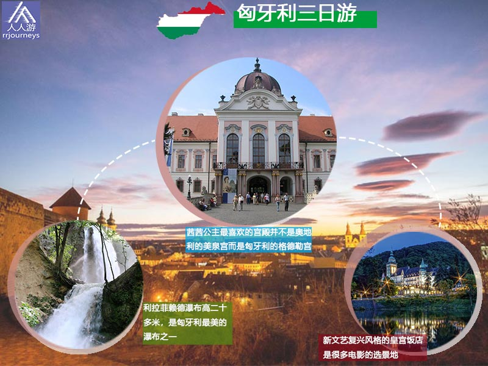
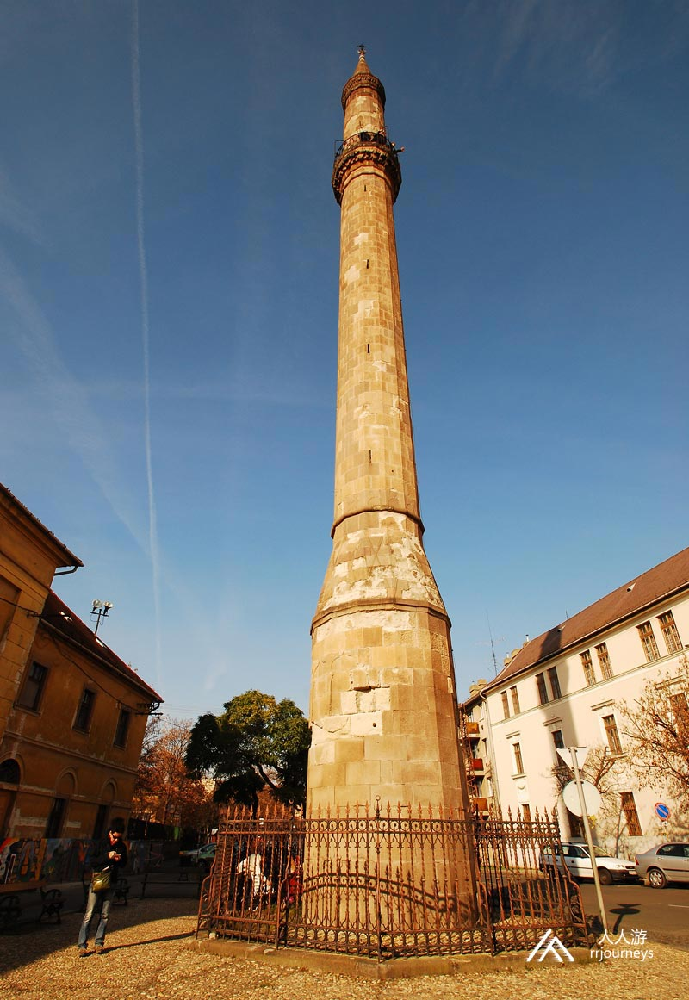
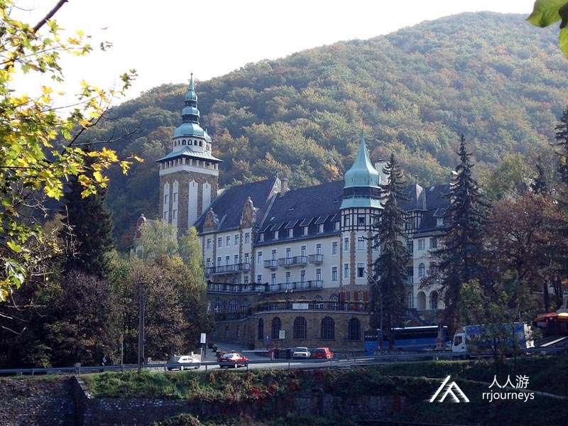
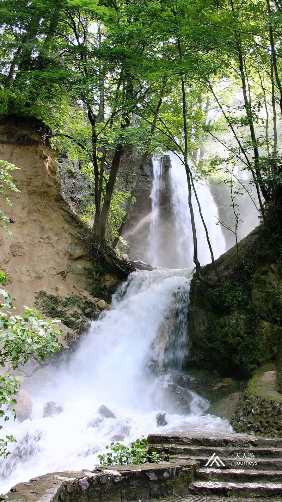
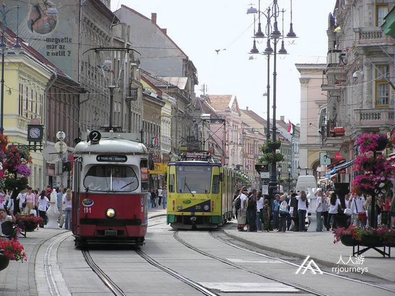
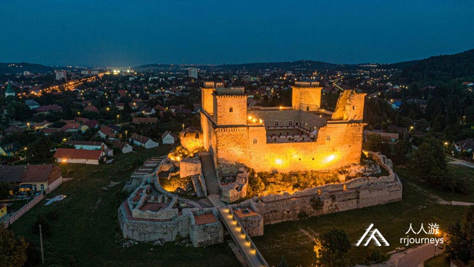
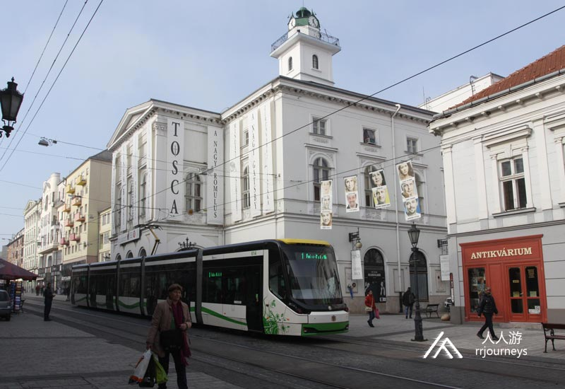
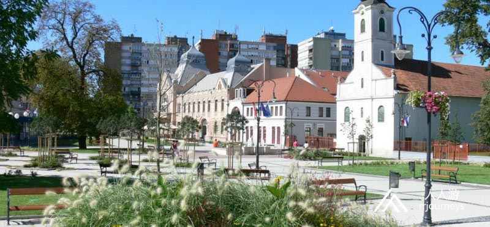
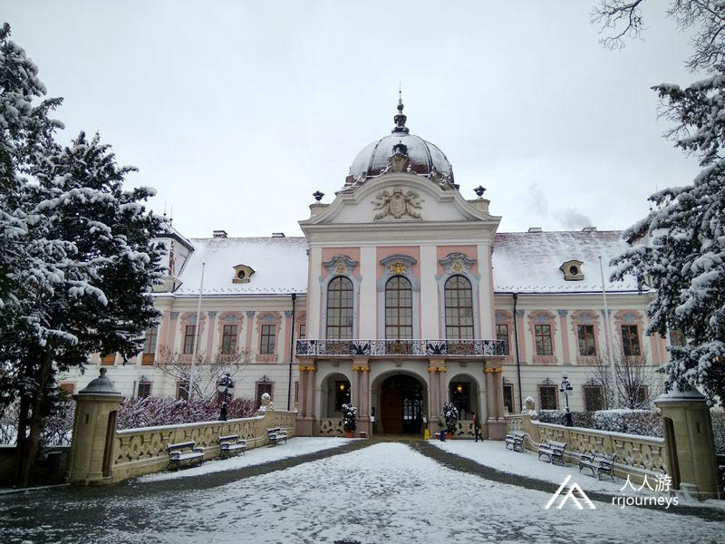

特色旅游
1日游
2-4日游
5-10日游
精品长线旅游
地址：匈牙利 布达佩斯 Budapest-Keleti, 1087
电话：0036-30-9574162
邮件：rrjourneys@gmail.com
网站：http://www.rrjourneys.com
【美景】
埃格尔：千人对抗数万人而不败的神话，创造出了酒中的传奇-公牛血葡萄酒
格德勒：茜茜公主最喜欢的宫殿并不是奥地利的美泉宫，而是匈牙利的格德勒宫
米什科尔茨：匈牙利北部地区最大的城市和中心，宁静而优美，岩洞温泉欧洲最大

【美食】
Goulash牛肉炖汤
Libamáj 鹅肝
Lángos特色油饼
Toltott Kaposzta 圆白菜肉丸
Halászlé 鱼汤
Ujhazi Tyukhuslevesi 家常老鸡汤
Kurtoskalacs 烟囱卷面包
Egri Bikavér埃格尔公牛血葡萄酒
具体行程：
day1:布达佩斯-埃格尔 入住地点：埃格尔
埃格尔 埃格尔位于匈牙利北区域，是重要的教育和文化中心。埃格尔大教堂是匈牙利最大的大教堂之一。城堡是许多著名的古迹和博物馆中最为突出的建筑。 埃格尔作为葡萄酒产区的中心，是匈牙利最重要的葡萄酒城市之一，埃格尔公牛血是国内外著名的葡萄酒。 自石器时代以来该地区就已有人居住，10世纪初匈牙利已经征服该地区。中世纪早期， 阿瓦尔和斯拉夫部落也住在这里。圣史蒂芬大教堂是1009年以前十个教区之一的所在地。埃格尔城堡是历史的核心，在此周围挖掘到了11世纪的圆形教堂和较小宫殿的遗迹。1248年国王贝拉准许兰伯特主教建造一座石城堡。到14和15世纪，城堡周围的森林大部分被清除，矿区城镇相继成立，老河床的埃格尔河流流经曲折的街道中心，这样就慢慢形成了附近的几个居住点。捷克也有一个叫埃格尔的小镇，是被当时查理大帝征服的埃格尔塞西居民居住的地方。 景点：埃格尔城堡 埃格尔城堡因击退1552年的土耳其的袭击而闻名。1241年的蒙古人入侵期间，这座城堡被毁，埃格尔的主教在埃格尔市的岩石山上建造了一座新城堡，并迅速发展。1470年，建造了哥特式宫殿。1552年土耳其40,000士兵袭击了这座只有2,000名守卫的城堡，并以失败告终。1,700名捍卫者幸存。1596年土耳其人再次将城堡包围并攻占。1701年奥地利人炸毁了城堡的一半。 景点：埃格尔尖塔 埃格尔尖塔是奥斯曼帝国统治时期最北端的宣礼塔。它建于17世纪初，高40米，由红色砂岩建造，也是清真寺的一部分。宣礼塔作为匈牙利保存完好的古迹和匈牙利的主要旅游胜地而得以幸存。埃格尔内部的螺旋楼梯有97个台阶，通向离地面26米高的阳台，可欣赏周围城市的独特景色。 埃格尔尖塔是匈牙利尚存的三个奥斯曼帝国时代的尖塔之一。它是其中最高，保存最好的。其它两个尖塔是烨迪尖塔和佩奇尖塔。2016年，埃格尔的土耳其穆斯林居民在327年后，获准从尖塔阳台上呼唤穆斯林祈祷。  景点：美人谷 美人谷有近200多个酒窖，最近几个世纪以来一直与埃格尔葡萄酒的声誉息息相关. 相传美人谷是古代宗教的女神之一，像爱的女神维纳斯一样。1774年在主教的许可的基础上开始了山谷老街的建设。主教巴尔科奇的经济政策加强了酒窖的建设，葡萄酒生产蓬勃发展，葡萄酒市场得以发展，因此需要合适的储藏室。埃格尔及其周边地区的地窖是切成流纹岩凝灰岩孔的地窖，可保持在10-15℃，正好符合葡萄酒的恒定温度，是葡萄酒储存和成熟的葡萄酒屋。切成石头的多孔酒窖是匈牙利一些葡萄酒产区的典型代表。 埃格尔具有绝佳的地理位置，文化生活，药用水域和温泉。拥有四千公顷历史悠久的葡萄酒产区，是最著名的红酒埃格尔公牛血的摇篮。 day2:埃格尔-利拉菲赖德-米什科尔茨 入住地点：米什科尔茨
利拉菲赖德是米什科尔茨最高的部分。1890年代初期安德拉斯•伯特伦伯爵决定在此建立政府的度假胜地。利拉菲赖德瀑布是匈牙利最高的瀑布。1926年地质学家在这里发现了热水源并得以开发。今天一座纪念碑屹立在其遗址上。 景点：皇宫饭店 利拉菲赖德皇宫酒店是1925年到1929年之间建成，Hámori湖水边，新文艺复兴风格。利拉菲赖德的名字来自贝拉·瓦伊的女儿绰号利拉。该地区是一个受欢迎的游览和度假胜地，部分电影也是在宫廷酒店拍摄的。在第二次世界大战时，它被德国士兵和俄国士兵占领，并从1950年代起成为SZOT度假胜地。该建筑于1993年成为Hunguest Hotels连锁酒店的财产，除了现有的约瑟夫·阿提拉雕像ÉvaVarga外，还放置了雕塑家赫尔曼·奥托的新雕像，露台上还设有铸铁柱，以纪念斯蒂芬大公的到来。 2015年皇宫酒店被列为匈牙利国家级酒店，具有国家特色。  景点：利拉菲赖德瀑布 利拉菲赖德瀑布是当地最大的垂坠瀑布，高二十多米。该瀑布是在利拉菲赖德的酒店建造期间建的，是人工瀑布，最初是溪流，流入哈姆湖。瀑布下方是安娜石灰石洞穴的一部分。  景点：安娜石灰石洞穴 这是一个世界罕见的钙华洞穴，全世界只有6个类似的洞穴，因此它是匈牙利的特殊自然价值之一。匈牙利佩奇还有一个类似的洞穴。该洞穴于1951年受到保护。它在海拔 272米处开放,其中200米可以参观,洞穴的总长度为568米。山洞中可以看到美丽的石灰岩地层，石化植物和植物印记。 在匈牙利的旅游洞穴中，这里是第一个建立了基于LED光源的照明系统。 米什科尔茨 米什科尔茨位于匈牙利东北部，是北部地区最大的城市和中心。该州四分之一的人口居住在米什科尔茨。这是在布达佩斯、德布勒森和塞格德之后的第四人口最多的城市。 旧石器时代的发现所证实，该地区是匈牙利最古老的居住区，也欧洲最古老的居住区之一。该居住点建于不同的重要贸易路线的汇合处，已是中世纪时期的一个贸易小镇，并于1365年获得国王路易大帝的城市地位。土耳其征服之后，工业也开始发展。 米什科尔茨是匈牙利最重要的工业中心之一。除了传统的重工业和食品工业外，现代电子，汽车和化学公司在城市经济中也发挥着重要作用。同时它一直试图加强其文化和旅游业。  景点：老城区 米什科尔茨的中心实际上是历史悠久的米什科尔茨本身。市中心具有代表性的典型建筑，像米什科尔茨国家剧院的古典主义建筑，塞切尼大街两旁的典型的老走廊房屋，让人联想到19世纪。 景点：迪欧什哲尔城堡 迪欧什哲尔城堡是中世纪的历史悠久的城堡，是米什科尔茨城市的一个重要组成部分。早在十二世纪，这座城堡就屹立于此。今天的哥特式城堡是在塔塔尔入侵之后建造的。在路易大帝统治期间度过了鼎盛时期，其骑士大厅是欧洲最大的大厅。到17世纪末，它已经无法居住，状况日益恶化。它的考古发掘始于1960年代。在2010年代初期，城堡开始修复并被恢复了原态，房间配有古董家具。  景点：米什科尔茨国家剧院 米什科尔茨国家大剧院位于米什科尔茨的市中心。剧院的古典主义和浪漫风格的建筑建于1847年至1857年之间。自2010年6月1日起，该剧院已成为欧洲剧院公约的正式成员。米什科尔茨国家剧院是该国的第一个石剧场。  景点：岩洞温泉
2016年，获得了全匈牙利年度的最佳温泉。岩洞温泉于1723年下令建造，1837年扩大了水疗中心的建筑，温泉浴场于1941年开放，但直到1959年5月14日，才转变为岩洞温泉。
day3:米什科尔茨-格德勒-布达佩斯
返回布达佩斯
格德勒
格德勒在佩斯州，离布达佩斯约30公里，人口为34,396。格德勒是匈牙利主要农业教育机构圣安斯特万大学的所在地。格德勒的宫殿最初是为贵族家族建造的。它也曾是奥地利皇帝和匈牙利国王弗朗兹·约瑟夫与他的妻子伊丽莎白的夏宫。
据考古证明公元312–337年君士坦丁一世统治时期的罗马防御工事在格德勒的南方。
格德勒宫是匈牙利的宫殿建筑中最重要，规模最大的古迹之一。它的建造者安塔尔·格拉萨尔科维奇伯爵是18世纪匈牙利最著名的贵族之一，并于1737年成了格德勒的新主人，开始建造匈牙利最大的巴洛克式庄园德尔勒宫。庄园中他建造了33座教堂，在哥德尔勒中心，他建造了成排的房屋并倡议制作了巴洛克艺术作品像圣母大教堂。他带给了格德勒决定性的转折。由于他的乡村计划的成功，格德勒于1763年成为乡村小镇，并拥有集市的权利。
1848年拉霍斯·科苏特和他的将军们在格德勒豪宅中召开了战争委员会会议，废除哈布斯堡王朝和争取匈牙利独立的想法便在这萌发了。
1867年匈牙利国家成为它的主人并在此举行了弗朗西斯约瑟夫一世和奥地利伊丽莎白皇后的加冕礼“茜茜公主”，王室主要在春季和秋季住在格德勒，从此城镇生活水平有了显着的增长。1945年后，这座宫殿像匈牙利的许多其他建筑物一样沦陷。
 景点：格德勒宫殿 格德勒宫殿位于佩斯州，建于18世纪，是匈牙利最大的巴洛克式城堡之一。在查尔斯三世国王和玛丽亚•特蕾莎皇后的青睐下，它度过了第一个鼎盛时期，1849年拉霍斯•科苏特领导的伊萨泽格战役胜利之后，这座城堡度过了第二个鼎盛时期，1867年弗朗兹•约瑟夫和伊丽莎白女王接受了格德勒和城堡作为加冕礼，并成为皇家安息之所。 宫殿为双U形，周围环绕着巨大的公园。该建筑物有八个翼楼，除了住宅区外，它还包含教堂，剧院，骑马厅，温室，温室和花圃。 自1994年以来，格德勒宫一直在翻新。该建筑物设有博物馆，城堡也是主要的活动中心。  景点：圣伊斯特万大学 圣伊斯特万大学是一所技术大学。它的总部和主校区在格德勒小镇，其他校园区位于布达佩斯，贝凯斯克萨巴，久洛，贾斯贝雷尼和萨尔瓦斯。该大学有八个不同的院系，每年招收大约15000名学生。 该大学成立于2000年，以前由几个独立机构合并而成的，其中最古老的是成立于1787年的前布达佩斯兽医大学。圣伊斯特万大学以匈牙利国王史蒂芬一世的名字命名。
6天5夜乌克兰小众深度游
7天6夜克罗地亚、波黑小众
5天4夜波兰、斯洛伐克小众
四天三夜奥地利、斯洛文尼亚
匈牙利最大的滑雪场一日游
6天5夜，奥地利滑雪自由行
7天6夜，奥地利旅游滑雪自
4天3夜，奥地利滑雪自由行
Copyright 2020 www.rrjourneys.com
人人游 旅游官方网站 版权所有 All Rights Reserved